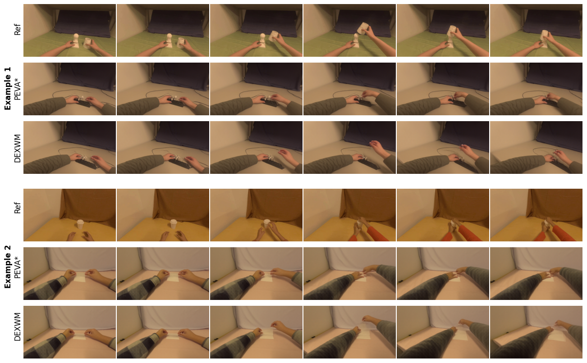
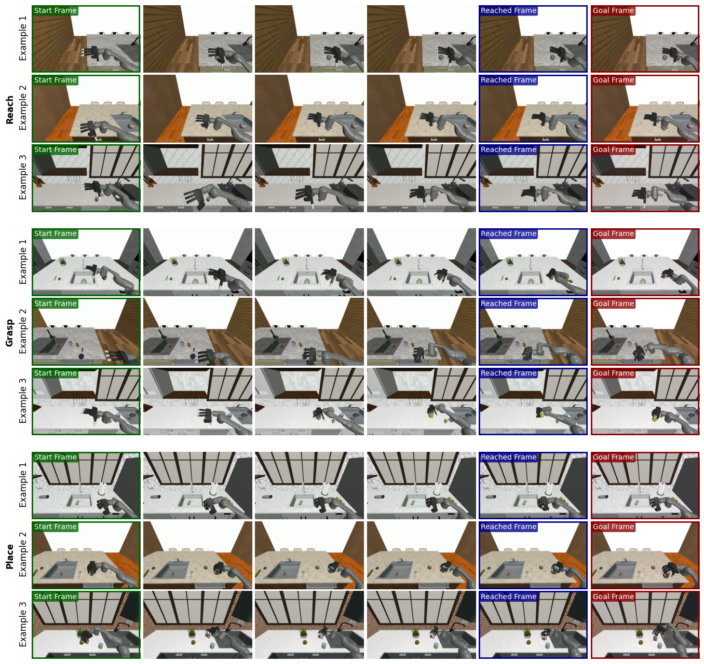

关键词：DexWM; world model; human videos; hand consistency; latent dynamics; dexterous manipulation
1. 论文速览与证据链
1.0 一句话贡献与关键词
训练灵巧操作 world model，从大量人类/机器人视频学习手-物交互动态，并迁移到真实机器人规划。这一定义把 DexWM 的任务对象、核心机制和预期收益放在同一句话中。关键词包括：DexWM; world model; human videos; hand consistency; latent dynamics; dexterous manipulation。这些概念共同界定了该工作位于灵巧操作、动作表示、感知融合或跨具身学习中的具体技术位置。
灵巧手 world model 需要理解指尖级动作如何改变物体，但真实灵巧机器人视频稀缺。普通视频模型缺乏精细动作条件，直接 policy 又只能解决训练过的任务。DexWM 的动机是利用大规模人类视频学习可迁移的交互动力学，并通过统一 hand keypoint action 跨越人手、平行夹爪和 Allegro 手之间的 embodiment gap。灵巧操作的接触变化难以由静态视觉直接判断，纯行为克隆又受机器人示范规模限制。DexWM 把问题改写为动作条件下的未来状态预测，使规划器能够比较候选动作而不必为每个任务重新训练策略。
3. 相关工作与技术定位
3.1 直接技术前作
它区别于无动作条件的视频生成模型，也区别于直接 observation-to-action 的 Diffusion Policy。状态预测采用视觉 latent world model 路线；动作表示借鉴人体/手部关键点；测试时采用 model predictive control。与 DWM 相比，DexWM 更强调 latent dynamics 可用于真实机器人规划，而不是生成高保真交互视频。它位于视觉 world model、动作迁移和 model predictive control 的交叉处。相较生成高保真视频的 DWM，DexWM 更强调 latent dynamics 是否对动作敏感并可用于搜索；相较 policy，它把决策拆成预测模型和优化器。
4. 方法、表示与训练流程
4.1 总体方法链路
图像由冻结 DINOv2-L 编码成 patch latent；动作由两个时刻之间的手部 3D keypoint 变化和 camera motion 表示。对于 DROID 平行夹爪，作者构造 dummy keypoints 统一动作词汇。Conditional Diffusion Transformer 根据当前 latent 与动作预测未来 latent，并通过 hand consistency loss 监督指尖和腕部 heatmap。测试时 CEM 在机器人关节轨迹空间采样，经运动学映射为 DexWM action，rollout 后以目标 latent/keypoint 代价排序。
4.2 核心输入、输出与表示
图像经冻结 DINOv2 编码为 patch latent，动作由密集手部运动与相机变化描述，conditional predictor 生成下一状态，并可解码为图像和手部关键点。规划时 CEM 反复采样动作序列，用目标图像定义代价并滚动执行。
图解 1：fig:flow
论文原图：Architecture. Images are encoded into latent states using a frozen DINOv2 DINOv2 encoder. The predictor takes these states, hand actions, and camera motions to predict the next state, which can then be decoded into reconstructed images and hand keypoints.
逐图分析：这张图在 DexWM 的证据链中承担的是“fig:flow”这一环；当前证据切片来自 fig01_flow。原图明确展示：Architecture. Images are encoded into latent states using a frozen DINOv2 DINOv2 encoder. The predictor takes these states, hand actions, and camera motions to predict the next state, which can then be decoded into reconstructed images and hand keypoints. 图里呈现的不是单纯网络结构，而是一条从数据到部署的计算链。DexWM 的关键假设被编码在模块连接方式中：可共享的部分被放入主干，具身或任务专属部分被留在适配接口。该图支撑设计逻辑，但不单独支撑泛化结论。
论文原图：Scaling With Predictor Size. PCK@20 and Embedding L2 error improve with larger models. Blue circles denote EgoDex+DROID training; red circles denote EgoDex-only training.
逐图分析：这张图在 DexWM 的证据链中承担的是“fig:model_size”这一环；当前证据切片来自 fig04_model_size_swapped。原图明确展示：Scaling With Predictor Size. PCK@20 and Embedding L2 error improve with larger models. Blue circles denote EgoDex+DROID training; red circles denote EgoDex-only training. 图里呈现的不是单纯网络结构，而是一条从数据到部署的计算链。DexWM 的关键假设被编码在模块连接方式中：可共享的部分被放入主干，具身或任务专属部分被留在适配接口。该图支撑设计逻辑，但不单独支撑泛化结论。
图解 5：fig:cosmos
论文原图：Conditioning on Hand Motion Enables Precise Control. utilizes dense dexterous actions, enabling finer-grained control compared to text conditioned World Models like Cosmos-Predict 2 agarwal2025cosmos.
逐图分析：这张图在 DexWM 的证据链中承担的是“fig:cosmos”这一环；当前证据切片来自 fig07_cosmosv4。原图明确展示：Conditioning on Hand Motion Enables Precise Control. utilizes dense dexterous actions, enabling finer-grained control compared to text conditioned World Models like Cosmos-Predict 2 agarwal2025cosmos. 这幅方法图的重点是模块职责：上游负责产生什么条件，中间表示保留什么信息，下游最终预测什么。对 DexWM 而言，这决定了训练数据如何被使用，也决定复现时应在哪些接口分别验收。框架完整不等于每个模块必要，因此还需与去除组件后的结果联合判断。
图解 6：fig:atomic_actions
论文原图：Simulating Counterfactual Actions. Starting from the same initial state, predicts future states given different atomic actions. The model reliably follows each action sequence, while capturing environment dynamics (e.g, see third row final frame where the cup moves forward when the hand collides with the cup).
逐图分析：这张图在 DexWM 的证据链中承担的是“fig:atomic_actions”这一环；当前证据切片来自 fig08_atomic_actions。原图明确展示：Simulating Counterfactual Actions. Starting from the same initial state, predicts future states given different atomic actions. The model reliably follows each action sequence, while capturing environment dynamics (e.g, see third row final frame where the cup moves forward when the hand collides with the cup). 图里呈现的不是单纯网络结构，而是一条从数据到部署的计算链。DexWM 的关键假设被编码在模块连接方式中：可共享的部分被放入主干，具身或任务专属部分被留在适配接口。该图支撑设计逻辑，但不单独支撑泛化结论。
图解 7：fig:supp_atomic_actions
论文原图：Simulating Counterfactual Actions. Starting from the same initial state, predicts future states given different atomic actions for controlling the right hand. The model reliably follows each action sequence while accurately capturing environment dynamics (e.g., pulling the string upward in Move Up in Example 2, and pushing the cup forward in Move Forward in Example 3.)
逐图分析：这张图在 DexWM 的证据链中承担的是“fig:supp_atomic_actions”这一环；当前证据切片来自 fig13_atomic_actions。原图明确展示：Simulating Counterfactual Actions. Starting from the same initial state, predicts future states given different atomic actions for controlling the right hand. The model reliably follows each action sequence while accurately capturing environment dynamics (e.g., pulling the string upward in Move Up in Example 2, and pushing the cup forward in Move Forward in Example 3.) 图里呈现的不是单纯网络结构，而是一条从数据到部署的计算链。DexWM 的关键假设被编码在模块连接方式中：可共享的部分被放入主干，具身或任务专属部分被留在适配接口。该图支撑设计逻辑，但不单独支撑泛化结论。
论文原图：Goal-Conditioned Planning with . The joint angles _0, , _T-1 are optimized using CEM to get the optimal actions a_0, , a_T-1 to drive the system to the goal.
逐图分析：这张图在 DexWM 的证据链中承担的是“fig:planning”这一环；当前证据切片来自 fig03_planning。原图明确展示：Goal-Conditioned Planning with . The joint angles _0, , _T-1 are optimized using CEM to get the optimal actions a_0, , a_T-1 to drive the system to the goal. 连续帧与并列样例显示了动作推进、接触变化或场景保持的具体过程，补充了最终成功率无法表达的中间行为。它能确认 DexWM 在这些案例中完成了哪些阶段，也应与失败样例和全量统计一起判断，避免只由精选结果得出结论。
论文原图：Action Transfer. Transferring actions from a reference sequence to a new environment using and PEVA^*. better captures fine-grained hands states that match those in the reference sequence.
逐图分析：这张图在 DexWM 的证据链中承担的是“fig:transfer_plot”这一环；当前证据切片来自 fig06_action_transfer。原图明确展示：Action Transfer. Transferring actions from a reference sequence to a new environment using and PEVA^*. better captures fine-grained hands states that match those in the reference sequence. 图中对象、任务、场景和分布不是背景信息，它们决定了 DexWM 学到的先验以及测试结论能外推到哪里。训练覆盖与评估变化必须逐项对应：只有被明确留出的对象、位置或任务才构成泛化证据，其他样例主要说明数据多样性。
图解 4：fig:real_robot_planning
论文原图：Real Robot Planning Example. Given goal and start images, successfully plans and executes the trajectory by finding the optimal actions using the Cross-Entropy Method. Notably, works zero-shot without any real-world training. (sec:robot_task_exec)
逐图分析：这张图在 DexWM 的证据链中承担的是“fig:real_robot_planning”这一环；当前证据切片来自 fig09_real_world_rollout。原图明确展示：Real Robot Planning Example. Given goal and start images, successfully plans and executes the trajectory by finding the optimal actions using the Cross-Entropy Method. Notably, works zero-shot without any real-world training. (sec:robot_task_exec) 读取重点不是寻找最高数字，而是检查对照是否隔离了变量。图中各方法在同一指标上的差距用于判断 DexWM 的新增设计是否有效，任务间波动则揭示方法更擅长或更薄弱的交互类型。未展示的随机种子、对象变化或长程失败仍是证据边界。
图解 5：fig:planning_time
论文原图：Planning time and success rate as optimizer iterations (with samples=512) and sample count (with optimizer iterations=10) vary.
逐图分析：这张图在 DexWM 的证据链中承担的是“fig:planning_time”这一环；当前证据切片来自 fig10_planning_time。原图明确展示：Planning time and success rate as optimizer iterations (with samples=512) and sample count (with optimizer iterations=10) vary. 读取重点不是寻找最高数字，而是检查对照是否隔离了变量。图中各方法在同一指标上的差距用于判断 DexWM 的新增设计是否有效，任务间波动则揭示方法更擅长或更薄弱的交互类型。未展示的随机种子、对象变化或长程失败仍是证据边界。
图解 6：fig:exploratory_data
论文原图：Exploratory Data Examples. Sequences of the robot performing random movements in the environment were collected to fine-tune for application to robotic simulation and real-world tasks. This exploratory data provides broad, unbiased coverage of the environment, aiming to bridge the embodiment gap between human and robot.
逐图分析：这张图在 DexWM 的证据链中承担的是“fig:exploratory_data”这一环；当前证据切片来自 fig11_exploratory_data。原图明确展示：Exploratory Data Examples. Sequences of the robot performing random movements in the environment were collected to fine-tune for application to robotic simulation and real-world tasks. This exploratory data provides broad, unbiased coverage of the environment, aiming to bridge the embodiment gap between human and robot. 这幅图给出了论文能力声明的样本基础。可见的长尾、任务组合或场景变化说明模型需要处理哪些分布差异，同时也暴露高频类别可能主导训练。DexWM 的泛化结论应限制在图中数据生成流程与测试划分能够支持的范围。
图解 7：fig:supp_rollouts
论文原图：Open-Loop Trajectory Rollouts. Given the initial state and an action sequence, predicts future latent states over a 4-second horizon, rolling out 20 frames at 5 Hz. For visualization, predicted frames are subsampled in the figure due to space constraints. Latent states are decoded into images for visualization. The predicted rollout closely follows the ground truth trajectory even in long-horizon complex dexterous tasks.
逐图分析：这张图在 DexWM 的证据链中承担的是“fig:supp_rollouts”这一环；当前证据切片来自 fig12_rollouts。原图明确展示：Open-Loop Trajectory Rollouts. Given the initial state and an action sequence, predicts future latent states over a 4-second horizon, rolling out 20 frames at 5 Hz. For visualization, predicted frames are subsampled in the figure due to space constraints. Latent states are decoded into images for visualization. The predicted rollout closely follows the ground truth trajectory even in long-horizon complex dexterous tasks. 任务和数据图把抽象的“多样性”具体化为对象、动作阶段和环境条件。对 DexWM 的实验而言，图中没有出现的动态扰动、材质、接触模式或具身不应被默认已经覆盖；它证明的是评估设计的广度，而非自动证明策略成功。
图解 8：fig:action_transfer

论文原图：Action Transfer. Transferring actions from a reference sequence to a new environment using and PEVA^*. better captures fine-grained hands states that match those in the reference sequence.
逐图分析：这张图在 DexWM 的证据链中承担的是“fig:action_transfer”这一环；当前证据切片来自 fig14_action_transfer。原图明确展示：Action Transfer. Transferring actions from a reference sequence to a new environment using and PEVA^*. better captures fine-grained hands states that match those in the reference sequence. 这幅图给出了论文能力声明的样本基础。可见的长尾、任务组合或场景变化说明模型需要处理哪些分布差异，同时也暴露高频类别可能主导训练。DexWM 的泛化结论应限制在图中数据生成流程与测试划分能够支持的范围。
6. 复现路线与工程风险
6.1 最小可行复现路径
复现首先需要处理 EgoDex 的 3D hand keypoints、camera pose 与 DINOv2 latent，并统一 DROID dummy keypoint 表示。训练需要较大 batch 和大量视频；之后还需采集少量目标机器人探索数据。规划端要实现机器人运动学映射、CEM 参数和目标图像代价。建议先验证 open-loop prediction 与 counterfactual action control，再接入真实 MPC。复现必须把预测与规划分开验收：先验证不同 atomic action 会产生可区分的未来 latent，再验证目标代价与 CEM 搜索，最后才上真实机器人。否则失败可能来自预测器、代价函数或优化预算中的任一环。
论文原图：Real Robot Task Examples. The robot successfully grasps objects, which are highlighted by black circles in the first image of each sequence for visual clarity, given the goal (red) and start (green) images. Notably, operates in a zero-shot manner, without any real-world training. In some cases, such as examples 2 and 3, the object moves slightly from its original location after being actually grasped by the gripper. We also present a failure trajectory, where a collision between the grippers and an upside-down bowl causes the bowl to move away, resulting in a missed grasp.
逐图分析：这张图在 DexWM 的证据链中承担的是“fig:real_world_experiments”这一环；当前证据切片来自 fig15_real_world_experiments。原图明确展示：Real Robot Task Examples. The robot successfully grasps objects, which are highlighted by black circles in the first image of each sequence for visual clarity, given the goal (red) and start (green) images. Notably, operates in a zero-shot manner, without any real-world training. In some cases, such as examples 2 and 3, the object moves slightly from its original location after being actually grasped by the gripper. We also present a failure trajectory, where a collision between the grippers and an upside-down bowl causes the bowl to move away, resulting in a missed grasp. 这里的反例比成功样例更能暴露系统假设。图中错误表明某类观测或表示不足以唯一确定正确动作，使 DexWM 在特定接触或几何条件下产生系统性偏差；这也是后续加入空间锚定、触觉或闭环纠错最直接的依据。
图解 2：fig:sim_experiments

论文原图：Robot Task Example in Simulation. Given goal (red) and start (green) images, successfully plans the trajectory by finding optimal actions using the Cross-Entropy Method inside an MPC framework. The final reached state (blue) in each task closely resembles the goal frame, demonstrating successful execution. Notably, was not trained on any task-specific robot data.
逐图分析：这张图在 DexWM 的证据链中承担的是“fig:sim_experiments”这一环；当前证据切片来自 fig16_sim_experiments。原图明确展示：Robot Task Example in Simulation. Given goal (red) and start (green) images, successfully plans the trajectory by finding optimal actions using the Cross-Entropy Method inside an MPC framework. The final reached state (blue) in each task closely resembles the goal frame, demonstrating successful execution. Notably, was not trained on any task-specific robot data. 图中的横纵轴、任务分组和对比方法共同规定了结论强度。应关注优势是否跨任务稳定、提升发生在成功率还是阶段完成度，以及联合配置是否优于单一组件。它能支持 DexWM 在这些基线与协议下的相对优势，却不能覆盖未参与比较的硬件或任务分布。